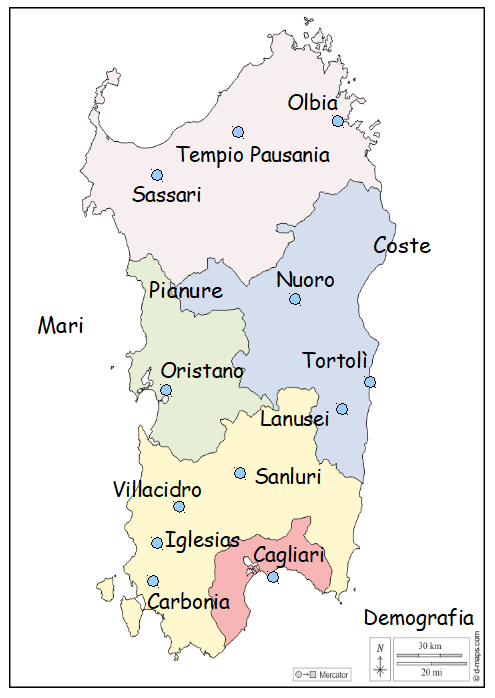

<DOCTYPE html>
<html>

<head>
<title> Index</title>
<meta charset="utf-8" />
<script src="js/jquery-3.6.0.js" type="text/javascript"></script>
<!-- Add maphilight plugin- questo è un commento cioè non ha alcuna funzione, si può anche cancellare se
si vuole -->
<script type="text/javascript" src="js/jquery.maphilight.min.js"></script>
<!-- Activate maphilight plugin- questo è un commento cioè non ha alcuna funzione, si può anche cancellare
se si vuole-->
<script type="text/javascript">$(function() {
$('.map').maphilight();
});
</script>
</head>

<body>
<b><center style="font-size:70px; color: #6699FF"> SARDEGNA </center></b><br><center>Clicca con il mouse sopra alle varie etichette per visitare la pagina dedicata.</center>

<center>  <!-- Image Map Generated by http://www.image-map.net/ -->


<map name="image-map">
    <area target="" alt="" title="" href="html/sardegna.html#oristano" coords="158,388,245,353" shape="rect">
    <area target="" alt="" title="" href="html/sardegna.html#sanluri" coords="246,463,328,494" shape="rect">
    <area target="" alt="" title="" href="html/sardegna.html#villacidro" coords="104,472,207,506" shape="rect">
    <area target="" alt="" title="" href="html/sardegna.html#olbia" coords="278,88,348,118" shape="rect">
    <area target="" alt="" title="" href="html/sardegna.html#iglesias" coords="159,526,246,557" shape="rect">
    <area target="" alt="" title="" href="html/sardegna.html#tempio pausania" coords="173,139,337,172" shape="rect">
    <area target="" alt="" title="" href="html/sardegna.html#sassari" coords="125,179,210,210" shape="rect">
    <area target="" alt="" title="" href="html/sardegna.html#nuoro" coords="271,264,341,293" shape="rect">
    <area target="" alt="" title="" href="html/sardegna.html#coste" coords="366,230,440,262" shape="rect">
    <area target="" alt="" title="" href="html/sardegna.html.html#carbonia" coords="141,586,239,616" shape="rect">
    <area target="" alt="" title="" href="html/sardegna.html#cagliari" coords="249,540,331,571" shape="rect">
    <area target="" alt="" title="" href="html/sardegna.html#demografia" coords="362,602,478,633" shape="rect">
    <area target="" alt="" title="" href="html/sardegna.html#tortolì" coords="298,349,375,375" shape="rect">
    <area target="" alt="" title="" href="html/sardegna.html.html#pianure" coords="142,277,228,302" shape="rect">
    <area target="" alt="" title="" href="html/sardegna.html.html#mari" coords="33,312,91,341" shape="rect">
    <area target="" alt="" title="" href="html/sardegna.html#lanusei" coords="257,405,332,432" shape="rect">
</map>
</center>

</body>

</html>